Negative und dynamisch negative Tage
Important
Dynamics 365 for Finance and Operations hat sich zu speziell entwickelten Anwendungen entwickelt, mit denen Sie bestimmte Geschäftsfunktionen verwalten können. Weitere Informationen zu diesen Änderungen finden Sie im Dynamics 365-Lizenzierungshandbuch.
Dieses Thema enthält Informationen zu negativen Tagen und dynamischen negativen Tagen und wie Sie diese verwenden können, um Ihr Unternehmen zu unterstützen. Der negative Tagplanungszeitraum zeigt die Anzahl von Tagen an, die Sie bereit sind zu warten, bevor Sie eine neue Wiederbeschaffung tätigen, wenn Sie einen negativen Bestand haben.
Dieses Thema beinhaltet die folgenden Informationen:
- Wie Bestellvorschläge erstellt werden
- Die Wechselbeziehung zwischen dem negativen Tagplanungszeitraum und den Lieferzeiten des Artikels
- Wie der dynamische negative Tagplanungszeitraum berechnet wird und wie der Faktor bei der Durchlaufzeit des Artikels in die Berechnung einbezogen wird
- Wie die Vorschläge zum Verbessern der Bearbeitungszeit für Materialbedarfsanforderungen (MRP) (Materialbedarfsplanung), die sich auf die negativen Tage beziehen, interpretiert werden
Dieses Thema verwendet drei hypothetische Szenarien, um Sie dabei zu unterstützten, diese Informationen zu veranschaulichen. Die Differenz zwischen Szenarios ist der Punkt, an dem Sie ggf. Bedarf erhalten:, vor, während oder nach dem Lieferzeitraum.
Szenario 1: Sie erhalten bei Bedarf vor dem Lieferzeitzeitraum des Artikels
Sie können jeweils entweder verhältnismäßig früh Bedarf bei der Durchlaufzeit des Artikels anfordern oder erst kurz bevor der Lieferzeitzeitraum beginnt. Hier ist ein Beispiel dieses Szenarios:
- Der DemoProduct-Artikel hat eine sechstägige Lieferzeit.
- Am Tag Null (1. Januar), ist der Lagerbestand für den DemoProduct-Artikel 0 (null).
- Am Tag Null (1. Januar) erhalten Sie einen Auftrag für die Menge 10 des DemoProduct-Artikels
- Am Tag sieben (7. Januar) gibt es eine vorhandene Bestellung der Menge 10 des DemoProduct-Artikels.
Die folgende Abbildung zeigt eine grafische Ansicht dieses Szenarios.
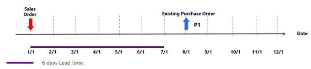
Fall A: Negative Tage sind geringer als die Lieferzeit des Artikels
Wenn Sie die negativen Tage auf einen Wert, der kleiner ist als die Lieferzeit des Artikels basierten, sucht MRP nach Belegen für den DemoProduct-Artikel innerhalb des negativen Tagplanungszeitraums. Weil keine Belege gefunden werden, erstellt, MRP eine neue geplante Einkaufsbestellung. Dieser Bestellvorschlag wird sofort um sechs Tage verzögert (die Lieferzeit). Daher wird dieser am 7. Januar angezeigt. Die vorhandene Bestellung erhält eine Aktivitätsmeldung Abbrechen, da die Erstellung der neuen geplanten Einkaufsbestellung redundant ist.
Die folgende Abbildung zeigt ein Bildschirmfoto dieses Falles
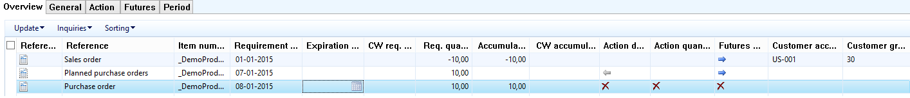
Die folgende Abbildung zeigt eine grafische Ansicht, was in diesem Fall passiert.
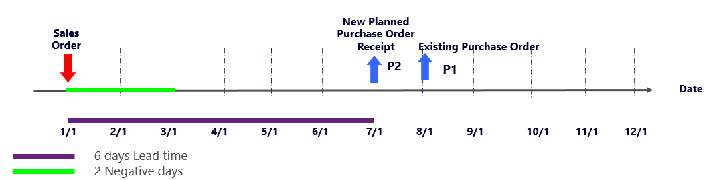
Wenn Sie MRP-Leistung erkennen und Nervosität planen, wird dieser Fall nicht erfolgreich sein. MRP muss einen neuen geplanten Auftrag erstellen und muss die Verzögerungen und Aktivitäten berechnen. Diese Aufgaben sind zeitaufwendig. Dieser Fall fügt auch zwei weitere Transaktionen Ihrem Plan hinzu. Andererseits wird der Auftrag nur um sechs Tage und nicht um sieben Tage verzögert.
Fall B: Negative Tage sind größer als die Lieferzeit des Artikels
Um die MRP-Leistung zu verbessern, können Sie die negativen Tage auf einen Wert festlegen, der größer ist als die Lieferzeit des Artikels. Da Sie die Lieferung innerhalb der Lieferzeit in diesem Szenario nicht erhalten können, können Sie nach Belegen suchen, solange die Suche sinnvoll ist. Obwohl die Ausführungszeit für MRP kürzer ist, sollten Sie nach weiteren Verzögerungen für die Aufträge aufpassen.
Fall C: Die Lieferzeiten des Artikels automatisch mit dem negativen Tagplanungszeitraum korrelieren
Um automatisch die Lieferzeit des Artikels mit dem negativen Tagplanungszeitraum zu korrelieren, verwenden Sie dynamische negative Tage. Um dynamische negative Tage zu verwenden, gehen Sie zu Produktprogrammplanung > Einstellungen > Produktprogrammplanungsparrameter und legen Sie dann auf der Registerkarte Allgemein im Abschnitt Abdeckung die Option Dynamische negative Tage verwenden die Option auf Ja fest. MRP sucht dann nach Zugängen im dynamischen negativen Tagplanungszeitraums. Dieser neue Planungszeitraum wird mithilfe der folgenden Formel berechnet.
Dynamischer negativer Tagplanungszeitraum = neue Lieferzeit + negativer Tagplanungszeitraum + (aktuelles Datum - Bedarfsdatum)
Wenn der Standardauftragstyp des DemoProduct-Artikels Produktion oder Übertragen lautet, ist die Lieferzeit die Lager Lieferzeit.
Wenn dynamische negative Tage verwendet werden, ist der Zeitraum, in dem MRP nach Belegen sucht, nun 6 + 2 + 0 = 8 Tage. MRP findet die vorhandene Bestellung und gleicht den Auftrag damit ab. Keine neuen geplanten Aufträge werden erstellt. Deshalb ist die Laufzeit für MRP kürzer. Die folgende Abbildung zeigt den Nettobedarf für den DemoProduct Artikel an.
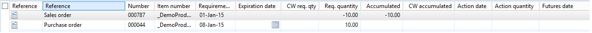
Die folgende Abbildung zeigt eine grafische Ansicht, was in diesem Fall passiert.
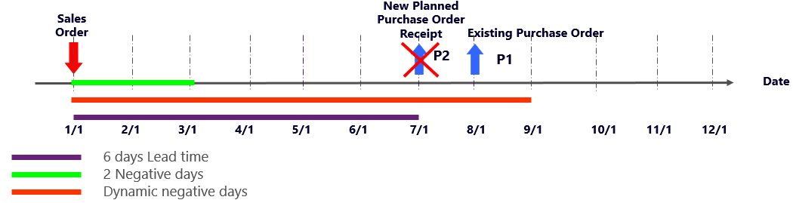
Fall D: Nur dynamische negative Tage verwenden
Wenn Sie die negativen Tage auf 0 (Null) festlegen und nur den Planungszeitraum mit den dynamischen negativen Tagen verwenden, ist der negative Planungszeitraum 6 + 0 = 6 Tage. In diesem Fall ist das Ergebnis mit dem Ergebnis von Fall A für dieses Szenario identisch. MRP muss einen neuen geplanten Auftrag erstellen und muss die Verzögerungen und Aktivitäten berechnen. Diese Aufgaben sind zeitaufwendig und können auch frustrierend sein. Zudem haben Sie zwei weitere Transaktionen zu verarbeiten. Da der Bedarf nicht rechtzeitig abgeschlossen werden kann, bis der Artikel eintrifft, verursacht dieser Fall unnötige Komplikationen in Ihrem Plan.
Die folgende Abbildung zeigt ein Bildschirmfoto für diesen Fall.
Die folgende Abbildung zeigt eine grafische Ansicht, was in diesem Fall passiert.
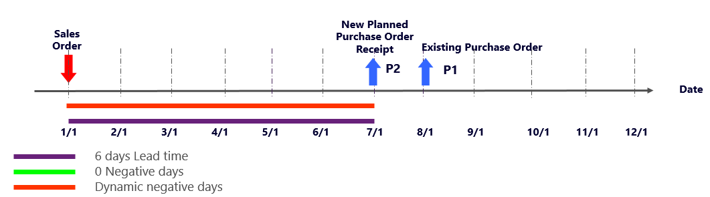
Fall E: Sowohl negative Tage nutzen, die größer sind, als die Lieferzeit des Artikels wie auch dynamische negativen Tage im Planungszeitraum nutzen.
Wenn Sie die negativen Tage auf einen Wert festlegen, der größer ist als die Lieferzeit des Artikels und wenn Sie auch den Planungszeitraum der dynamischen negativen Tage nutzen, lautet der Zeitraum für die dynamischen Tage 6 + 6 + 0 = 12 Tage. Dieser Ansatz produziert möglicherweise einen äußerst langen Planungszeitraum, in dem MRP Ergebnisse suchen muss. Informationen darüber, wie beispielsweise Fall E einer Situation zugeordnet ist, in dem Sie die negativen Tage auf einen langen Zeitraum festlegen, finden Sie im Abschnitt Schlussfolgerung in diesem Thema.
Szenario 2: Sie erhalten Bedarf während dem Lieferzeitzeitraum des Artikels
Sie können Bedarf während der Lieferzeit des Artikels erhalten. Hier ist ein Beispiel dieses Szenarios:
- Der DemoProduct-Artikel hat eine sechstägige Lieferzeit.
- Am Tag Null (1. Januar), ist der Lagerbestand für den DemoProduct-Artikel 0 (null).
- An Tag vier (5. Januar), der innerhalb der Lieferzeit des Artikels liegt, erhalten Sie einen Auftrag für die Menge 10 des DemoProduct-Artikels.
- Am Tag sieben (8. Januar) gibt es eine Bestellung für die Menge 10 des DemoProduct-Artikels.
Die folgende Abbildung zeigt eine grafische Ansicht dieses Szenarios.
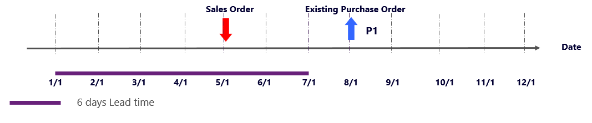
Fall A: Negative Tage sind geringer als die Lieferzeit des Artikels
Wenn Sie die negativen Tage auf einen Wert, der kleiner ist als die Lieferzeit des Artikels basierten, sucht MRP nach Belegen für den DemoProduct-Artikel innerhalb des negativen Tagplanungszeitraums. Weil keine Belege gefunden werden, erstellt MRP eine neue geplante Bestellung, die das aktuelle Datum als Auftragsdatum verwendet. Dieser Bestellvorschlag wird sofort um sechs Tage verzögert (die Lieferzeit). Daher wird dieser am 7. Januar angezeigt. Die vorhandene Bestellung erhält eine Aktivitätsmeldung Abbrechen, da die Erstellung der neuen geplanten Einkaufsbestellung redundant ist.
Die folgende Abbildung zeigt ein Bildschirmfoto für diesen Fall.
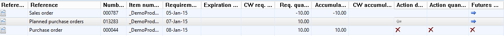
Die folgende Abbildung zeigt eine grafische Ansicht, was in diesem Fall passiert.
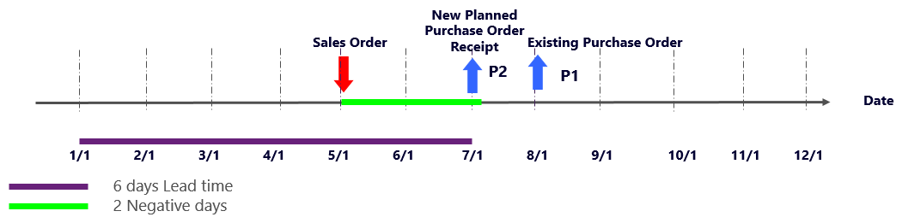
Fall B: Negative Tage sind größer als die Lieferzeit des Artikels
Dieser Fall ähnelt Fall B für Szenario. 1. Wenn Sie die negativen Tage auf einen Wert festlegen, der größer ist als der Lieferzeitraum, erhalten Sie keinen neuen geplanten Auftrag. Die Auftrag wird dieser vorhandenen Bestellung zugeordnet.
Fall C: Die Lieferzeiten des Artikels automatisch mit dem negativen Tagplanungszeitraum korrelieren
Dieser Fall ähnelt Fall C für Szenario 1, da dynamische negative Tage ebenso gut arbeiten, wie sie es in diesem Fall tun. Der Zeitraum für die dynamischen negativen Tage beträgt jetzt 6 + 2 - 4 = 4 Tage. Wenn Sie diesen Ansatz verwenden, sucht MRP die vorhandene Bestellung und fügt den Auftrag hinzu. Da keine neuen bestellten Aufträge erstellt werden, ist die Ausführungzeit für MRP kürzer.
Die folgende Abbildung zeigt ein Bildschirmfoto dieses Falles
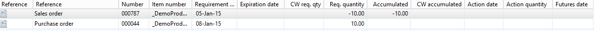
Die folgende Abbildung zeigt eine grafische Ansicht, was in diesem Fall passiert.
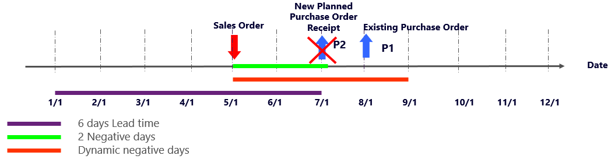
Fall D: Nur dynamische negative Tage verwenden
Wenn Sie die negativen Tage auf 0 (Null) festlegen und nur den Planungszeitraum mit den dynamischen negativen Tagen verwenden, ist der negative Planungszeitraum jetzt 6 + 0 - 4 = 2 Tage. In diesem Fall ist das Ergebnis mit dem Ergebnis von Fall A für dieses Szenario identisch. Eine grafische Ansicht davon, was geschieht, finden Sie im Fall A für dieses Szenarios.
Fall E: Sowohl negative Tage nutzen, die größer sind, als die Lieferzeit des Artikels wie auch dynamische negativen Tage im Planungszeitraum nutzen.
Wenn Sie die negativen Tage auf einen Wert festlegen, der größer ist als die Lieferzeit des Artikels und wenn Sie auch den Planungszeitraum der dynamischen negativen Tage nutzen, lautet der Zeitraum für die dynamischen Tage 6 + 6 - 4 = 8 Tage. Dieser Ansatz produziert möglicherweise einen äußerst langen Planungszeitraum, in dem MRP Ergebnisse suchen muss. Informationen darüber, wie beispielsweise Fall E einer Situation zugeordnet ist, in dem Sie die negativen Tage auf einen langen Zeitraum festlegen, finden Sie im Abschnitt Schlussfolgerung in diesem Thema.
Szenario 3: Sie erhalten Bedarf nach dem Lieferzeitzeitraum des Artikels
Sie erhalten Bedarf nach dem Lieferzeitzeitraum des Artikels. Hier ist ein Beispiel dieses Szenarios:
- Der DemoProduct-Artikel hat eine sechstägige Lieferzeit.
- Am Tag Null (1. Januar), ist der Bestand für den DemoProduct-Artikel 0 (null).
- An Tag sieben (8. Januar), der außerhalb der Lieferzeit des Artikels liegt, erhalten Sie einen Auftrag für die Menge 10 des DemoProduct-Artikels.
- Am Tag zehn (11. Januar) gibt es eine Bestellung für die Menge 10 des DemoProduct-Artikels.
Die folgende Abbildung zeigt eine grafische Ansicht dieses Szenarios.
Fall A: Negative Tage sind geringer als die Lieferzeit des Artikels
Wenn Sie die negativen Tage auf einen Wert festlegen, der kleiner ist als die Lieferzeit des Artikels, sucht MRP zwei Tage vor dem Bedarfsdatum des Auftrags. Weil keine Belege gefunden werden, erstellt, MRP eine neue geplante Bestellung am 2. Januar. Diese geplante Einkaufsbestellung wird derzeit rechtzeitig versandt, um den Auftragsbedarf zu decken. Die vorhandene Bestellung erhält ein Abbrechen-Aktivitätsmeldung, da sie nicht mehr erforderlich ist.
Die folgende Abbildung zeigt ein Bildschirmfoto dieses Falles
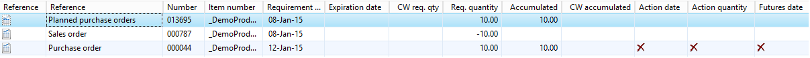
Die folgende Abbildung zeigt eine grafische Ansicht, was in diesem Fall passiert.
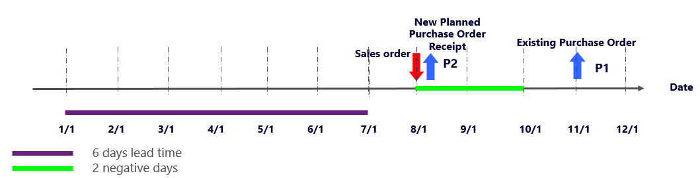
Note
Im vorherigen Bildschirmfoto ist das Bestellungsbedarfsdatum der 12. Januar. Da dieses Bildschirmfoto aus dem Jahre 2015 stammt, als der 11. Januar ein Sonntag war, verschiebt MRP das Bedarfsdatum auf den nächsten Arbeitstag, der am Montag, den 12. Januar war. Dennoch hat die Bestellung ein Lieferdatum vom 11. Januar.
Fall B: Negative Tage sind größer als die Lieferzeit des Artikels
Wenn Sie die negativen Tage auf einen Wert festlegen, der größer ist als der Lieferzeitraum, erhalten Sie keinen neuen geplanten Auftrag. Die Auftrag wird dieser vorhandenen Bestellung zugeordnet. Daher wird der Auftrag verzögert. Wenn Sie einen Bestellvorschlag erstellen, können Sie den Auftrag fristgerecht versenden.
Die folgende Abbildung zeigt ein Bildschirmfoto dieses Falles
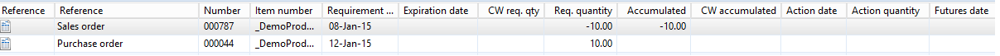
Die folgende Abbildung zeigt eine grafische Ansicht, was in diesem Fall passiert.
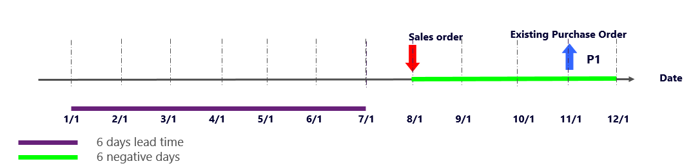
Fall C: Die Lieferzeiten des Artikels automatisch mit dem negativen Tagplanungszeitraum korrelieren
Dieser Fall ähnelt dem Fall C für Szenario 1, da dynamische negative Tage ebenso gut arbeiten, wenn nicht besser als sie es in diesem Fall in Fall B tun.
Der Zeitraum für die dynamischen negativen Tage beträgt jetzt 6 + 2 - 7 = 1 Tag. Aber in diesem Fall berücksichtigt das System nicht die negativen Tage des Lieferzeitraums (2), da MRP den maximalen Wert zwischen dem Lieferzeitraum der negativen Tage und den Lieferzeitraum der dynamischen negativen Tage berücksichtigt. Deshalb ist das Ergebnis in diesem Fall gleich wie das Ergebnis von Fall A für dieses Szenario.
Die folgende Abbildung zeigt eine grafische Ansicht, was in diesem Fall passiert.
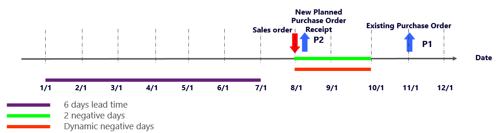
Fall D: Nur dynamische negative Tage verwenden
Wenn Sie die negativen Tage auf 0 (Null) festlegen und nur den Planungszeitraum mit den dynamischen negativen Tagen verwenden, ist der negative Planungszeitraum jetzt 6 + 0 - 7 = -1 Tag. In diesem Fall wird vom System noch der Lieferzeitraum der negativen Tage (2) berücksichtigt. Deshalb ist das Ergebnis in diesem Fall gleich wie das Ergebnis von Fall A für dieses Szenario und hat die gleichen Nachteile. Eine grafische Ansicht davon, was geschieht, finden Sie im Fall A für dieses Szenario 2.
Fall E: Sowohl negative Tage nutzen, die größer sind, als die Lieferzeit des Artikels wie auch dynamische negativen Tage im Planungszeitraum nutzen.
Dieser Fall ist der gleiche wie Fall E für Szenarios 1 und 2. Er verfügt üblicherweise über die gleichen Vorteile und Nachteile.
Abschluss
Wie die drei Szenarien in diesem Thema zeigen, wird empfohlen, die negativen Tage auf einen Wert festzulegen, der höher ist als die Lieferzeit der Artikel in der Dispositionssteuerungsgruppe. Es ist auch empfehlenswert, nur dynamische negative Tage zu verwenden, und die negativen Tage auf die Anzahl von Tagen festzulegen, die Sie bereit sind zu warten, bevor Sie eine Wiederbeschaffung tätigen, wenn Sie einen negativen Bestand haben (das heißt, die Anzahl von Tagen, die Sie bereit sind, die Nachfrage noch weiter zu verzögern). Darüber hinaus müssen Artikel in derselben Dispositionssteuerungsgruppe ähnliche Lieferzeiten haben.
Wenn Sie die negativen Tage auf 0 (Null) festlegen und keine dynamischen negativen Tagen verwendet, erstellt MRP immer einen neuen geplanten Auftrag, um den Bedarf zu decken. In diesem Fall ist es wichtig, dass Sie mit den Aktivitätsmeldungen arbeiten, um sicherzustellen, dass Sie das Lager nicht aufstocken.
Sie müssen die negativen Tage auf einen langen Zeitraum festlegen und dann mit den Aktivitätsmeldungen arbeiten. Dieser Ansatz produziert gute Planergebnisse, ist aber auch langsamer. Es ist möglicherweise auch schwieriger zu analysieren, da Sie diese Aktivität analysieren und anwenden müssen. Hier ist ein Beispiel:
- Der DemoProduct-Artikel hat eine sechstägige Lieferzeit.
- Am Tag Null (1. Januar), ist der Bestand für den DemoProduct-Artikel 0 (null).
- Am Tag Null (1. Januar) erhalten Sie einen Auftrag für die Menge 10 des DemoProduct-Artikels
- Am Tag zehn (10. Januar) erhalten Sie einen Auftrag für die Menge 10 des DemoProduct-Artikels
- Am Tag zwölf (12. Januar) gibt es eine Bestellung für die Menge 10 des DemoProduct-Artikels.
- Negative Tage werden auf 20 festgelegt, was viel höher ist als der Lieferzeitraum des Artikels.
Die folgende Abbildung zeigt eine grafische Ansicht davon, was passieren könnte.
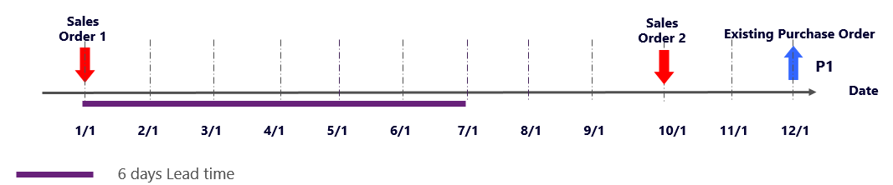
MRP ergibt folgendes Ergebnis:
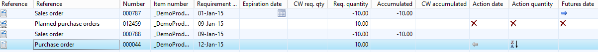
Im oberen Bildschirmfoto ist das Auftragsanforderungsdatum der 9. Januar anstelle dem 10. Januar. Da dieses Bildschirmfoto aus dem Jahre 2015 stammt, als der 10. Januar ein Samstag war, verschiebt das Bedarfsdatum den Auftrag auf den vorangehenden Arbeitstag, der am Freitag den 9. Januar war.
MRP erstellt eine geplante Einkaufsbestellung, um den Bedarf zu decken, der durch den ersten Auftrag angefordert wird, doch dann empfiehlt er auch, dass Sie den Bestellvorschlag stornieren, da Sie die vorhandene Bestellung wechseln und die Menge darauf erhöhen.
Die Ergebnisse sind nicht falsch, doch die Ausführungszeit für MRP kann länger sein, da alle dieser Verzögerungen und Vorschläge erstellt werden müssen. Darüber hinaus kann der Planer möglicherweise mehr Zeit brauchen, um das MRP Ergebnis zu verstehen. Am wichtigsten in diesem Fall ist es, dass die Planer die Aktivitätsmeldungen verstehen und verwenden.
Wenn Sie die negativen Tage auf eine Nummer reduzieren, die näher am Lieferdatum ist, und Sie negative dynamische Tage nutzen, wird MRP folgendes Ergebnis anzeigen.
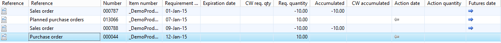
MRP erstellt einen Bestellvorschlag, der dem ersten Auftrag zugeordnet ist. Anschließend wird der zweite Auftrag wie erwartet der bestehenden Bestellung zugeordnet, basierend auf den festgelegten negativen Tagen. Dieses Planungsergebnis ist ebenfalls korrekt, und Ausführungszeit für MRP kann kürzer sein. In diesem Fall ist es wichtig, dass Sie die Aktivitätsmeldungen verstehen und wissen, wie Sie damit umgehen müssen.
Um sicherzustellen, dass die korrekten Werte für Ihr Unternehmen eingegeben wurden, müssen Sie in Bezug auf Funktionen und MRP-Ausführungszeit denken. Daher müssen Sie vielleicht etwas testen, um die optimalen Werte zu bestimmen.
Siehe auch
Weitere Diskussion finden Sie im ursprünglichen Blogbeitrag Mehr über (dynamische) negative Tage.